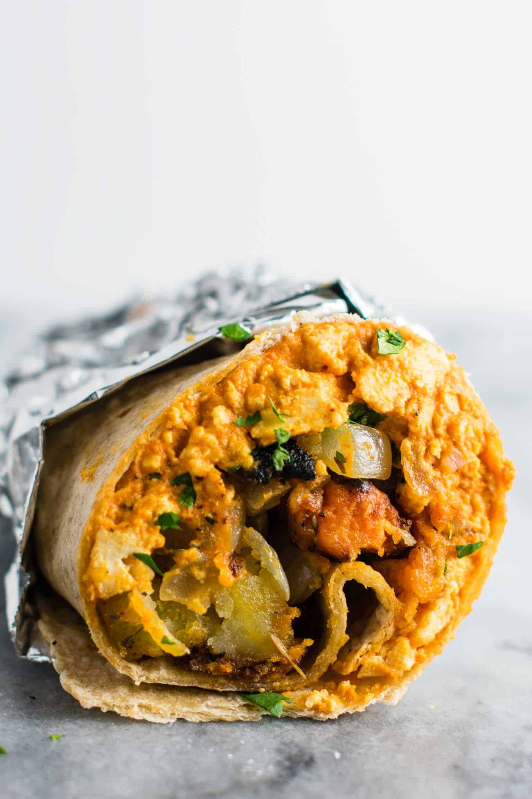

Vegan Breakfast Burritos

The best vegan breakfast burrito recipe made with scrambled tofu and homemade crispy potato hash. Meal prep and
fill your freezer with a batch of these delicious burritos!
Ingredients
- 3 washed potatoes, diced
- 1 sweet potato, diced
- 1 tbsp olive oil
- 1 tsp salt
- 1/4 tsp chili flakes
- 1 cup roasted, salted almonds
- 1 cup enchilada sauce
- 1/2 cup salsa
- 1/4 cup nutritional yeast
- 14 oz extra firm tofu
- Juice of 1 lime
- chopped cilantro
- 7 large tortillas
Instructions
- Preheat your oven to 210°C
- Mix the diced potatoes and sweet potato with the olive oil, salt, and chili flakes.
- Bake the potato mixture for about 30 minutes, checking and stirring after 15 minutes.
- While the potatoes are cooking, blend the enchilada sauce, salsa, nutritional yeast, and almonds together in
a blender or food processor
- Put the tofu in a large frying pan on medium heat, and use a fork to mash it up so it looks like scrambled
egg
- Add the sauce mixture from the blender to the tofu and mix until they are integrated, then remove the tofu
mixture from heat
- Time to start stuffing! Place 3 heaping tablespoons of each the tofu and the potatoes in a tortilla, and top
with cilantro (as much as you like&41;. Then, roll into a burrito! Repeat until you are out of
ingredients.